In a survival situation, traps can capture animals that provide us precious calories from meat and fat. Think of them as little hunters that you put out to do your work for you while you are off accomplishing other tasks. There are seemingly as many different traps as there are creatures to catch, but we’ve selected 15 for you to try and master.
Legal Note: Find out about your local trapping regulations before you buy traps, and only test and use the traps that are legal in your area (during practice time and in season). Keep in mind that possession of traps that are illegal in your area, even if just for emergency use, could be viewed as intent to break game laws.
Please do not use any of these unless you are in a true survival situation.
1. Grave’s Bait Stick Snare
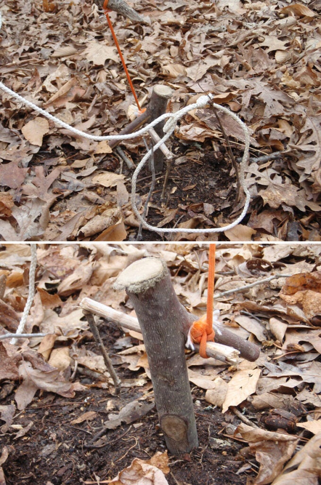
traps_02
Never handle the noose of a snare line with your bare hands.
This bait-activated spring pole snare comes to us from a little-known and long out-of-print book called Bushcraft by Richard Graves. The Grave’s bait stick snare is my go-to trap for most animals and occasions. To build this trap, you’ll need a spring pole, a forked stake to drive into the ground, a pencil-diameter toggle stick, a snare line with an attached trigger line, a bait stick, and some bait.
Tie the snare line to the end of your spring pole. Bend the pole down until the snare line touches the ground and mark the spot. Drive the forked stake into the ground at that spot. This keeps the snare line more or less plumb, which is vital to setting the trap. Tie your pencil toggle to the end of the trigger line, which is attached to your snare line. Run the toggle under the fork on the stake in the ground, keeping the toggle parallel to the ground and at a right angle to the stake. Next, set your baited trigger stick out at the end of the toggle, which should set the entire trap. Now, set it off to test it. If it springs quickly, set up some twigs to support the noose, then reset the trigger.
Warning: Never handle the noose of a snare line with your bare hands or fingers AFTER the trigger is set. If the trap misfires, the noose can close on your hand or fingers, ripping off skin or even a digit.
2. Grave’s Motion Triggered Snare
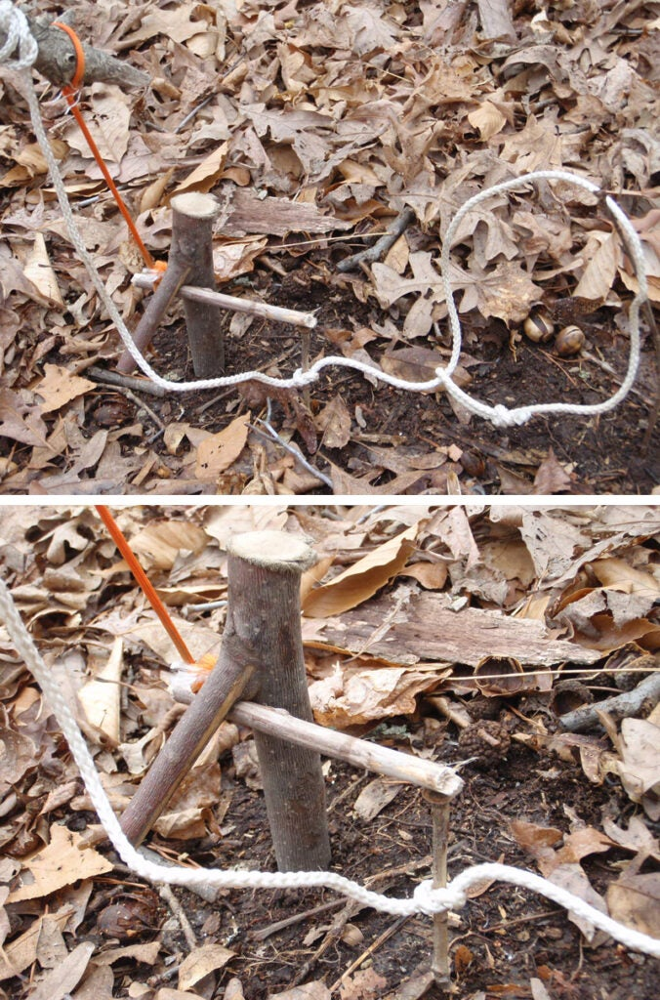
traps_03
The action of the trap is simple: When the noose tightens and pulls from the animal getting caught.
This is a variation of the Grave’s bait stick snare that can be set for motion activation, no bait required. You’ll need all the same things as you would for the standard Grave’s bait stick setup: spring pole, forked stake, toggle, trigger stick, and snare line.
The difference in this set is that you place it near a trail or run, and your snare line is tied around the vertical trigger stick. The action of the trap is simple: When the noose tightens and pulls from the animal getting caught, the trigger stick is pulled out from under the end of the toggle, setting off the trap. Just make sure the snare line or toggle line don’t get hung up under the fork of the stake in the ground, which would hang up the whole trap.
3. Fixed Snare
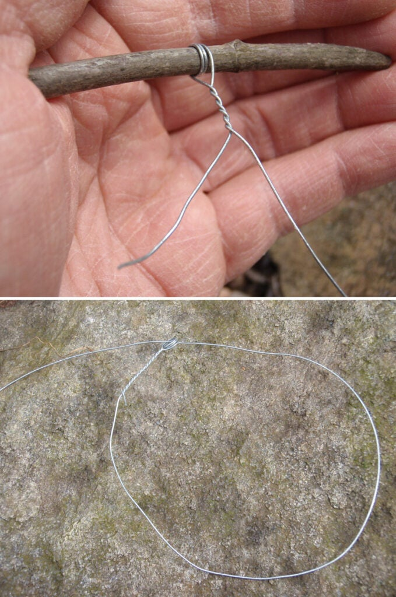
traps_04
Flaws aside, the fixed snare can be the fastest snare to create and set.
The fixed-loop snare is made from solid wire–or better yet braided steel cable–for a combination of strength, rigidity, and flexibility. These are usually single-use traps, as the caught animal often bends and kinks the wire making it vulnerable to breaking. Flaws aside, the fixed snare can be the fastest snare to create and set.
Find a twig that is 1/8 to 3/16 inches in diameter that is breakable. Wind one end of your wire around the twig two or three times, then twist the twig like a propeller, which will twist the end of the wire closed. Break the twig and remove it to reveal an eye that you use to make the noose. Place these snares over burrows and in small-game trails, or attach them to spring pole snares for a more secure snare line.
4. Peg Snare
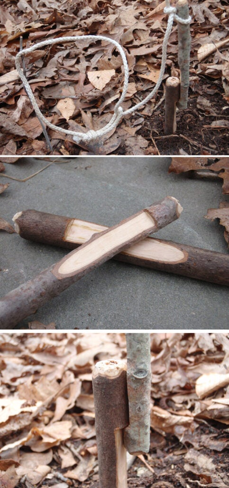
traps_05
Carve a hook near the top of your peg and drive it deep into the ground.
The peg snare can give neophyte trappers some trouble if they don’t know which side of the peg to tie the line, but this trap is relatively easy to set. You’ll need a spring pole, a peg driven into the ground, a snare line with noose, a peg to act as a trigger, and maybe some bait. That last part will depend on whether you plan to make the trap either motion- or bait-activated.
Carve a hook near the top of your peg and drive it deep into the ground. If you had a saw of some kind, you could also saw off the top of a standing bush or sapling. This woody plant and its extensive root system will provide an exceptional anchor for your trap, which is especially valuable in sandy soils where pegs and stakes are often yanked out of the ground by the spring pole. After you set your ground peg, carve a matching hook in your trigger peg, which will grab onto the hook in your ground peg. Tie your snare line to the spring pole and tie the trigger peg into the line. Make sure you tie the knot on the trigger peg on the side of the peg you have cut the hook into. Tying the line elsewhere on the peg will pull the trigger at an odd angle and you’ll never set the trap. You can attach bait to the trigger peg with the noose hanging around the baited part. Or you can set the noose in a trail near the peg trigger.
5. Drowning Snare
traps_06
This is often the easiest trap to set, providing you have a steep-banked waterway frequented by creatures.
This simple trap can acquire food for you and put the critter out of its misery faster than other traps. The drowning snare requires a snare line with a noose, a heavy rock, a float stick, and a stick to prop up the rock in a precarious position.
This is often the easiest trap to set, providing you have a steep-banked waterway that is frequented by creatures of habit, using the same runs to get in the water over and over.
To make this trap, simply tie the snare line to the rock, leaving a length of line free to tie the float. Set the noose in a run or slide that is heading straight into the water. Prop up the rock so that it will fall if the noose is tugged. You can also tie the prop stick in line on the snare line. The animal pulls the rock in after them, drowning. The float lets you see where the rock and animal are located underwater. In cold conditions, this trap makes the most sense of all traps, with the cold water keeping the animal intact, chilled and away from scavenger animals.
6. Treadle Snare
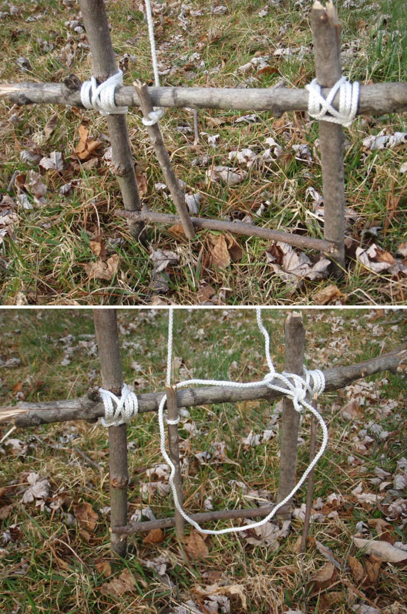
traps_07
Set the noose of the snare line so that it hangs beside the treadle, and wait for your dinner.
This “spring pole and noose” trap is set off by the animal bumping the treadle stick by stepping on it, knocking it down, or knocking it out of their way while running down their trail. The treadle snare requires a spring pole, a snare line with noose and trigger line, a pencil-sized toggle stick, the treadle trigger stick, and a support to hold the trigger stick.
Begin by tying your snare line to the end of the spring pole and tying the toggle stick to the end of the trigger line. Pull the spring pole down, then lap the toggle over the support, using the treadle trigger stick to hold the toggle in place. Set the noose of the snare line so that it hangs beside the treadle, and wait for your dinner.
7. Squirrel Pole Snare
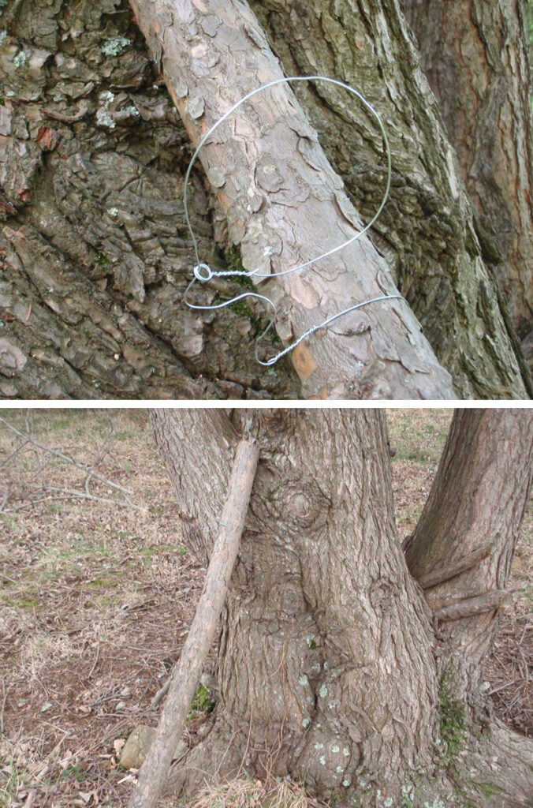
traps_08
Begin making wire snare loops from 2-foot lengths of 22- or 24-gauge wire.
This trap preys on the squirrel’s love of short cuts. Select a four- to six-foot pole that is about the diameter of your arm, and cover it with small wire snare loops. It is best if the pole has a rough, natural look to it, so don’t carve off all the bark. It’s also helpful if the pole has a fork at one end, which you can stick into the ground or pin against a tree to keep the pole from twisting out of place.
Begin making wire snare loops from 2-foot lengths of 22- or 24-gauge wire. Make the noose loops just under three inches in diameter, and zig-zag the wire between the pole and the loop to give you some slack. Twist these snares around the pole, and place them all over the squirrel pole. Don’t put all your eggs in one basket by just using two or three snare loops. Put a dozen or more on the pole, with some on the top and some on the sides. Now, pin the squirrel pole against a tree that has squirrel sign around it, or especially one with a squirrel nest in its branches.
8. Rolling Snare
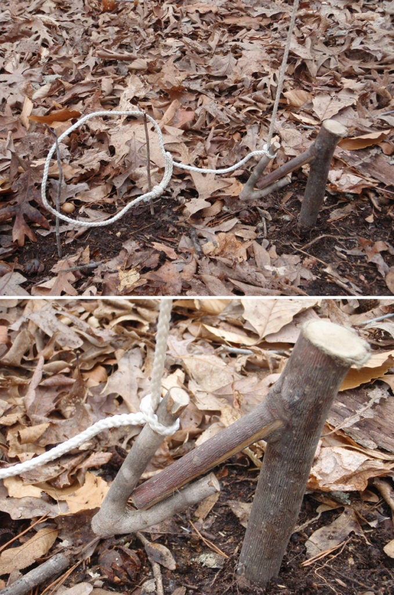
traps_09
This trap is ideal for trails and runs.
This snare uses a pair of wooden hooks to trigger a motion-activated spring pole snare trap. You’ll need a spring pole, a snare line with noose, a hook to drive into the ground, and a hook to tie to the snare line. This trap is ideal for trails and runs.
Find a forked branch about one to two inches in diameter. Cut a point on the non-forked end and drive it into the ground near the edge of a small-game trail. Find a similar, smaller fork to tie to the snare line. Engage the two hooks so that the free one will roll off the hook that is staked to the ground, NOT so they will hook together which would prevent the trap from going off. Set your noose in the trail, propped up with twigs or tied in place with thread. No baiting is required.
9. Figure 4 Deadfall
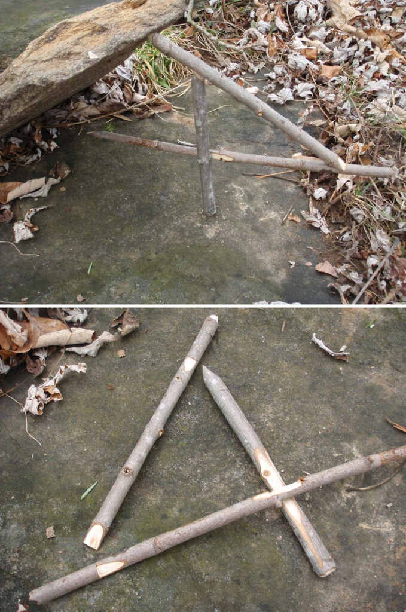
traps_10
Tricky to carve, the figure 4 deadfall has bested more than a few would-be trappers.
Tricky to carve, the figure 4 deadfall has bested more than a few would-be trappers. But, on the bright side, you only need the deadfall weight, three sticks and some bait. A rock works best for the weight, and it should have a square edge on it so that it stably sits on the ground. The three sticks should be perfectly straight, and about the same diameter and length. Finger-thick and one-foot long will work for most deadfall triggers.
Carve a flat screwdriver point on one stick, which will become your vertical post. Carve another screwdriver point on one end of a stick and a notch near the opposite end. This will be your diagonal stick. Carve a notch at one end of the third stick, and make a point with the opposite end to receive bait. Now comes the tricky carpentry. Lay out the sticks to make a “number 4” shape. Square up the vertical post and cut a notch on the horizontal bait stick so that it catches the square edge you carved on the post. Now try to put all three sticks together so that the notches catch each other and hold up the deadfall weight. If it doesn’t hold, re-carve any spots that won’t hold. If it does work, bait the trap and put it to work. Survive any wilderness situation with these critical tips.
10. Figure 4 Snare
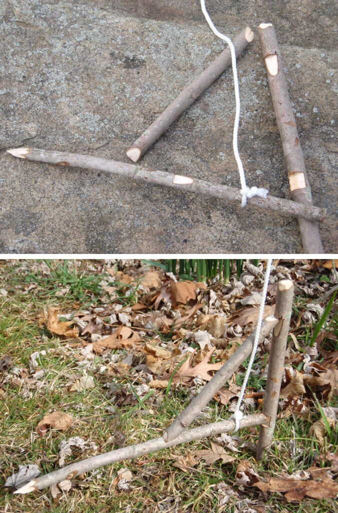
traps_11
Bait the trap, tie on the trigger line, and suspend the noose with a pair of twigs.
The figure 4 snare combines the sensitive leverage trigger of the figure 4 deadfall, with the snagging capability of a spring pole snare. For this trap, you’ll need a good, snappy spring pole, snare line with noose and a side line to the trigger, bait, and the three sticks to make the “4.”
Get started by tying the snare line to the end of your spring pole. Make sure the pole has enough lifting power. Then drive the vertical piece of the figure 4 deep into the ground. This member is holding the energy of the spring pole, so drive it a foot deep to keep it from being pulled up out of the ground. Assemble the figure 4 by notching the vertical and horizontal pieces to receive the diagonal. Bait the trap, tie on the trigger line, and suspend the noose with a pair of twigs.
11. Pine Pitch Bird Cup Trap
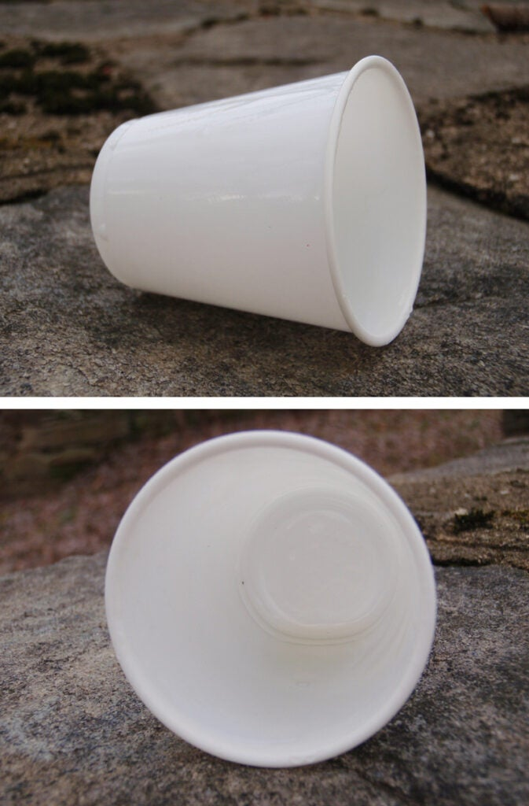
traps_12
This method is still something to consider in a severe emergency.
This unorthodox trap isn’t an animal killer like the rest, which has its good and bad points. The traditional native version involved a small cone of birch bark, stitched together so it looks like an ice cream cone. The interior is smeared with sticky pine pitch, with bird seed stuck inside the cone. The cone is placed on its side, and additional seed is scattered around the cone to entice the birds. When the bird finishes eating the seeds outside of the cone, it should start pecking at the seed inside. With pitch on its head and feathers, the bird becomes disoriented and unable to fly away. Dixie cups and other small cups can replace the traditional bark cone for emergency trapping today. Not legal—and very messy—this method is still something to consider in a severe emergency.
12. Paiute Deadfall
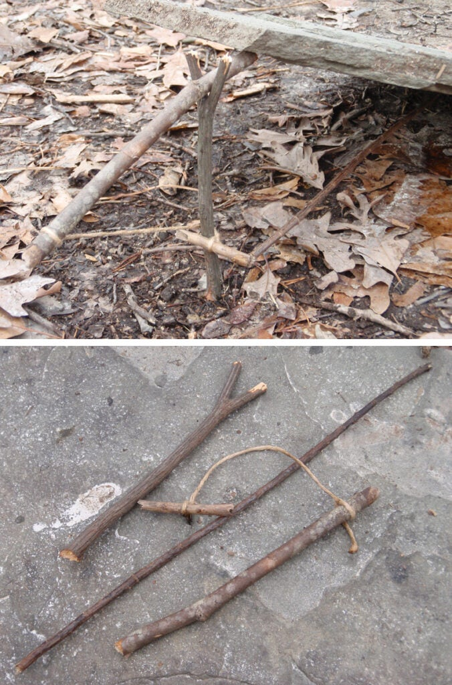
traps_13
This Native American trap is fast-acting when set correctly.
This Native American trap is fast-acting when set correctly. For an average-sized rodent like a rat or prairie dog, you’ll need an eight-inch-long “Y” shaped stick, a straight stick thicker than a pencil and about nine inches long, a two-inch-long stick that is a little skinnier than a pencil, a slender bait stick that is half the diameter of a pencil and about 12 inches long, some critter bait, about 8 inches of string, and a flat rock that is 5 to 10 pounds.
To set it all up, take your nine-inch straight stick (the lever) and tie one end of the string to it. Tie the other end of the string to the two-inch stick (the toggle). Square knots are fine for each end of the string. Wipe or skewer the bait on one end of the 12-inch bait stick. Now you are ready to set it all up. Stand up the “Y” stick (the post) by the edge of the rock. Put the string-less end of the lever in the fork of the post, with about 1 inch sticking out toward the rock. Lift up the rock and place it on the tip of the Lever. Next, you’ll wrap the two-inch toggle halfway around the post. It’s basically a 180-degree turn. Now you should be able to hold up the rock by just holding the toggle. The final step is to place the baited end of the 12-inch bait stick between a rough spot under the stone and the tip of the toggle. It’s good to scope out this crack or crevice before setting up the trap. When you can let go of the trigger stick and the rock stays up in the air, you’ll know you did it right.
13. Greasy String Deadfall
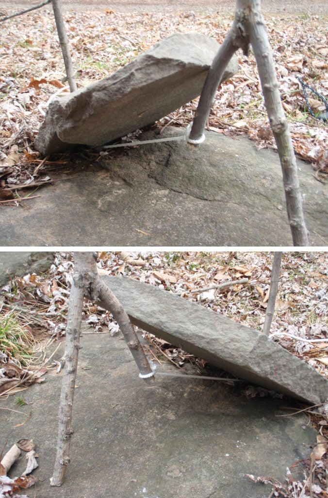
traps_14
To make this trap, tie one end of the twine to a root, sapling trunk or peg in the ground.
For millennia, our ancestors have trapped with very little gear. This bait driven is the least complicated trap in the gallery, consisting of a forked stick, a deadfall weight, a length of thin twine and some bait. The forked stick will work best if the forks end up parallel, with one long fork leg and a shorter one. The twine could be hand woven in the field, or you could use a piece of jute. The bait is mushed into the twine, and if all goes right, the animal will be under the deadfall chewing on the twine when it breaks.
To make this trap, tie one end of the twine to a root, sapling trunk or peg in the ground; and tie the other end of twine to the shorter fork of the forked stick. Place the deadfall weight in position so you can determine where to place the bait. Squish the bait into the twine deeply and replace the rock.
14. Toggle Deadfall
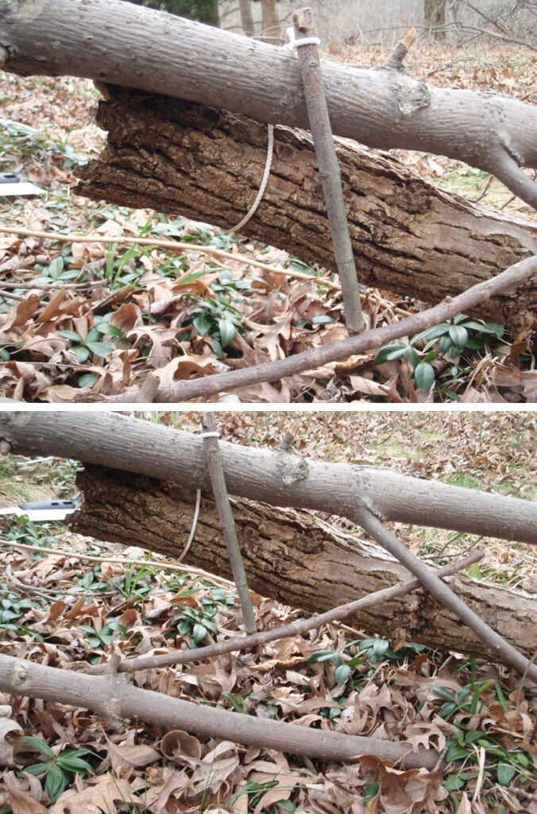
traps_15
Set the trigger low and set the trap in the animal’s trail.
The toggle deadfall uses some string and a toggle to hold the weight up in the air for this motion sensitive trap. This deadfall works best with a log as the weight. You’ll need the log, about a foot of cord, a pencil-sized toggle stick, a trigger stick, and a support to hold the log up in the air.
Start by tying your cord to the end of the toggle stick and the end of the log. The toggle then laps over the support, which can be the top of a stake or a horizontal branch on a shrub. Place the trigger stick so that it holds the end of the toggle and is in the path of the animal. Set the trigger low and set the trap in the animal’s trail. When the animal pushes the trigger down, the toggle and log are released.
15. McPherson Spring Deadfall
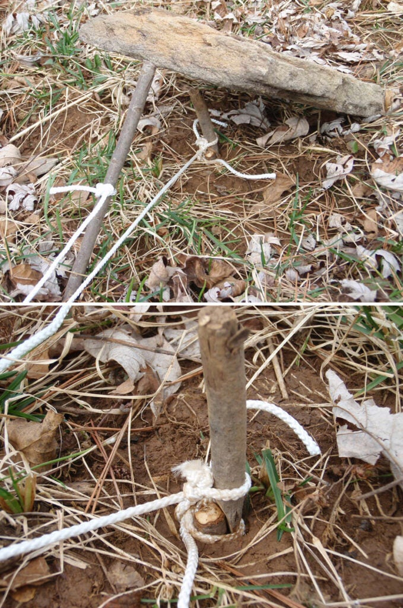
traps_16
The sharpened toggle is baited and then it goes into the small twine loop around the peg in the ground.
This trap from John and Gerri McPherson’s book, Primitive Wilderness Living & Survival Skills, is one of the more complicated deadfalls that you can build. But with a little work, the explosive firing mechanism unleashes a lightning-quick deadfall action. This trap requires a two- to three-foot spring pole, a two-foot length of cord, a one-foot length cord piece, a small peg driven into the ground, a sharpened toggle, a deadfall support stick, a few inches of twine ,and some bait.
Find two small trees or shrubs just inches apart, then tie the end of your spring pole to both. Tie your two-foot cord to the free end of the spring pole and the sharpened toggle. Pull the toggle so that the spring pole bends about two or three feet. Drive your peg into the ground there, flush with the soil. Dig out a tiny bit around the peg so a slack loop of twine can be tied around its end. The sharpened toggle is baited and then it goes into the small twine loop around the peg in the ground. Place the deadfall weight over the trigger area, propped up with the support stick. Tie your one-foot cord to the support stick and the longer cord, so that the main cord pulls the support stick out from under the deadfall when the trigger is tripped. Survive any wilderness situation with these critical tips.
Traps are portable enough to be placed into a small lightweight trapping kit. Tim MacWelch
How to Build a Survival Trapping Kit in 3 Easy Steps
There are thousands of traps that are used worldwide to catch wild game for food and fur, but only a few of these are also trusted performers in the realm of survival.
Of that group, an even smaller number of traps are portable enough to be placed into a small lightweight trapping kit. The best among these are snares. Snares are a group of traps that restrain or strangle game animals. These can be stationary, fixed snares that only restrain an animal, or they can be dynamic traps with complex triggers and engines that lift animals up off the ground.
In the event that you have to provide for yourself, a survival trapping kit can really maximize your ability to catch game. These little “automated hunters” are out there day and night, rain or shine, giving you multiple chances to catch game for food. They’re working hard while you’re off doing other survival chores, or even sleeping through the night. Here’s how to build your own survival trapping kit to stash in a bug-out bag.
Add the Snares
These are the most important ingredients of the kit. Snares can be made of cable, cord, or wire, thought the best kind are braided steel cable with a metal locking slide. This kind of snare constricts tightly around the animal and is unlikely to kink when they roll around, or break when chewed. An assortment of sizes is a good idea, so you can handle different sized animals that may be inhabiting your survival site.
A few large snares (3/32 inch cable) are suitable for bobcat or beaver and will be strong enough to handle medium-sized game. About a dozen small snares (1/16 inch cable) will be ideal for squirrel, rabbit, and the like. A 4 foot length is fine for all of them. A dozen snares is the minimum I will pack in a kit, because it’s the minimum I will set. Always remember that trapping is a numbers game. Unless it’s virgin territory teeming with game, you’d be lucky to catch something in one out of ten traps, every couple of days.
Bring Some Bait
The best bait is one that you could also eat in a pinch. If space is really limited in your kit, you can use MRE pouches of peanut butter, which will last for years and serve as a reasonable lure for rodents and many omnivores. If you have a little more room, a small tin of sardines may be just the thing to bring it that fat carnivore or scavenger. And both of these items are edible for humans, if needed.
Kill the Stink
Scent is a deal breaker in trapping. Even the most nose-blind animal can smell the human scent on objects that we have touched, and this generally causes them to avoid the item. A small bottle of de-scenting spray may be just the thing to allow you to “clean” the scent off your traps. You could also go old-school and bring a bag of powdered charcoal. This black powder can be wiped on your hands and traps before you set your trap line. It absorbs odors and adds a little cover scent. One final stink eliminator is a barrier. An unscented trash bag can be added to the kit and used as a ground cloth to kneel upon when setting your traps. Mark it somehow, so you are always putting the same side down, and you’ll keep the shower of human scent from falling so heavily at the actual trap site.
{kind=link}